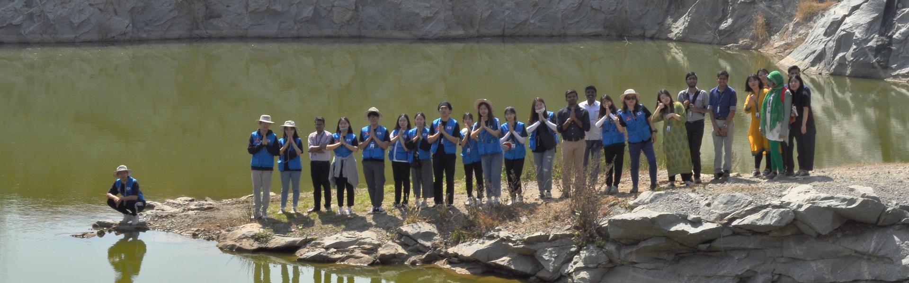

Disaster Management is an emerging theme and discipline in India. The Government of India has recognized its importance and now have a Disaster Management (DM) Act enacted in the year 2005. The DM Act 2005 recognizes the importance of academia for the development of the country through sustainable development approach by mainstreaming disaster management into it. The disaster management team is working towards understanding various natural and human-induced hazards and risks in general and the hazards in the State of Karnataka in particular.
Disaster Management is an emerging theme and discipline in India. Government of India has recognized its importance and now we have Disaster Management (DM) Act enacted in the year 2005. The DM Act 2005 recognize the importance of academia for the development of the country through sustainable development approach by mainstreaming disaster management into it. The faculty of engineering at Christ (Deemed to be University) has recognized the importance of it and currently the E-Sail has envisaged the Disaster Management as its component theme for the benefit of students and societies. The team working on it constitutes students who have a flair for the subject and are keen to learn further. The faculties involved in the thematic development and mentoring have experience in the fields of different facets of disaster management. Besides the team also constitutes of people as advisors who have expertise in the disaster risk management and response and innovations development in the thematic domain.